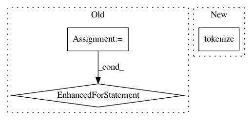

68b5105ae8c0225f426ddfa8928b9bfe9eb76b76,pycorrector/utils/tokenizer.py,,,#,101
Before Change
if __name__ == "__main__":
txt = ["我不要你花钱,这些路曲近通幽",
"这个消息不胫儿走",
"这个消息不径而走",
"这个消息不胫而走",
"复方甘草口服溶液限田基",
"张老师经常背课到深夜，我们要体晾老师的心苦。",
"新进人员时，知识当然还不过，可是人有很有精神，面对工作很认真的话，很快就学会、体会。",
"小牛曲清去蛋白提取物乙"]
t = Tokenizer()
for i in txt:
txt_seg = t.tokenize(i)
txt_seg_s = t.tokenize(i, "search")
txt_seg_s_n = t.tokenize(i, "search", False)
txt_seg_s_f = t.tokenize(i, "default", False)
print(i)
print(txt_seg)
print(txt_seg_s)
print(txt_seg_s_n)
print(txt_seg_s_f)
After Change
text = "这个消息在北京城里不胫儿走"
print(text)
t = Tokenizer()
print("deault", t.tokenize(text, "default"))
print("search", t.tokenize(text, "search"))
print("ngram", t.tokenize(text, "ngram"))
In pattern: SUPERPATTERN
Frequency: 3
Non-data size: 3
Instances
Project Name: shibing624/pycorrector
Commit Name: 68b5105ae8c0225f426ddfa8928b9bfe9eb76b76
Time: 2020-02-27
Author: xuming624@qq.com
File Name: pycorrector/utils/tokenizer.py
Class Name:
Method Name:
Project Name: Rostlab/nalaf
Commit Name: a7949425b0ff59786c9baf976e112ac2e07f3f77
Time: 2016-11-03
Author: i@juanmi.rocks
File Name: nalaf/learning/taggers.py
Class Name: StubSameSentenceRelationExtractor
Method Name: annotate
Project Name: sloria/TextBlob
Commit Name: 1f0509fedfd578d939486d238f1d297f9e7e6279
Time: 2013-12-22
Author: sloria1@gmail.com
File Name: textblob/classifiers.py
Class Name:
Method Name: _get_words_from_dataset